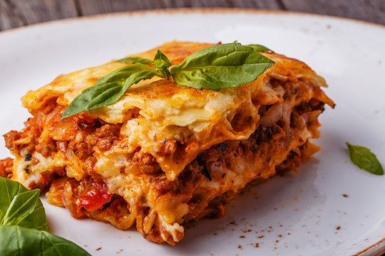

Home
Lasagna

Description
Lasagna is a classic Italian dish made with layers of
pasta sheets, rich meat sauce, creamy cheese, and
tomato sauce. It is baked until the top becomes golden
and the cheese melts.
This hearty dish is perfect for family meals and
gatherings. Each slice combines savory meat, pasta,
and melted cheese.
Ingredients
- Lasagna pasta sheets
- 500g ground beef
- 2 cups tomato sauce
- 1 onion, chopped
- 2 cloves garlic, minced
- 1 cup ricotta cheese
- 2 cups mozzarella cheese
- 1/2 cup parmesan cheese
- Salt and pepper
- 1 tablespoon cooking oil
Steps
- Preheat your oven to 180°C.
- Heat oil in a pan and sauté the onion and garlic.
- Add the ground beef and cook until browned.
- Pour in the tomato sauce and season with salt and pepper.
- Cook the sauce for around 10-15 minutes.
- In a baking dish, add a layer of meat sauce,
followed by pasta sheets and cheese.
- Repeat the layers until the ingredients are used up.
- Top with mozzarella and parmesan cheese.
- Bake for 35-45 minutes until golden and bubbly.
- Allow it to cool slightly before serving.